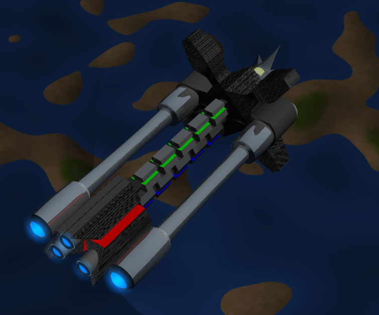
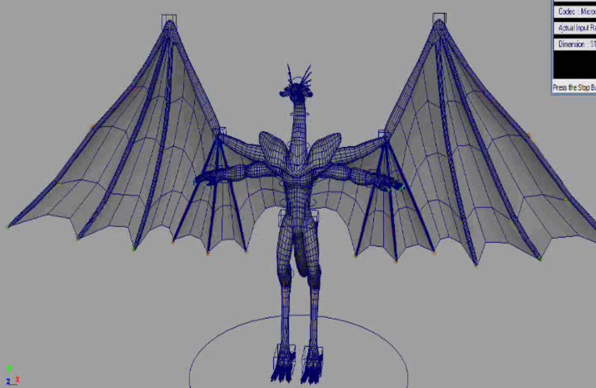
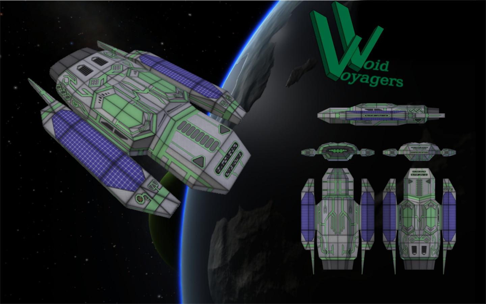
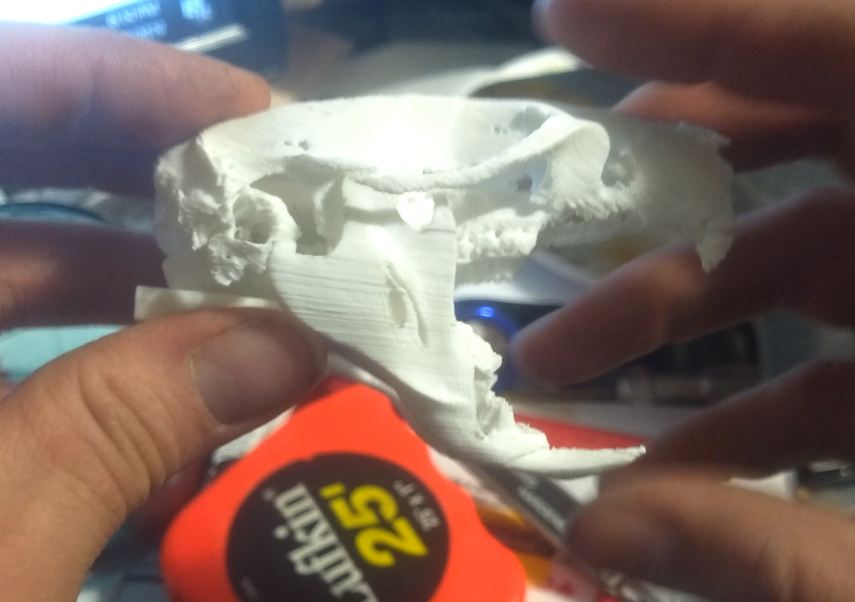
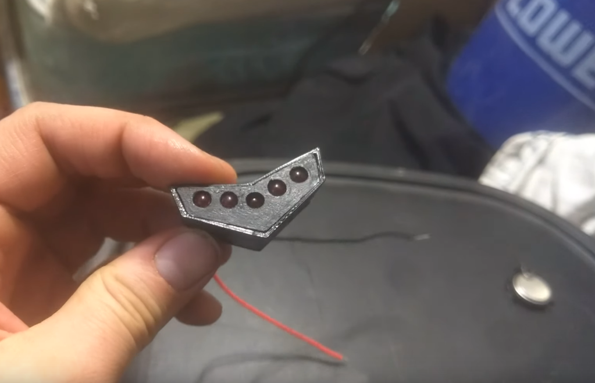
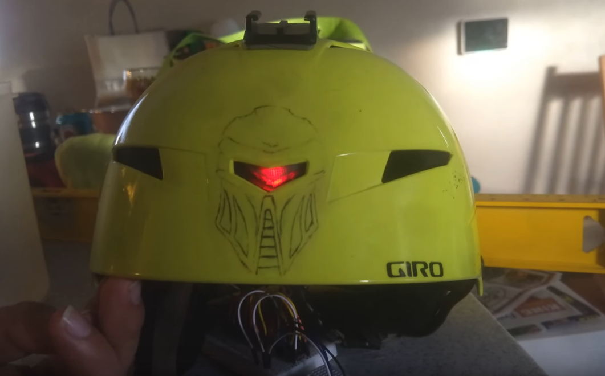

3D Modeling:
This is a picture of one of the first models I ever made. It was created with software called 'Animation Master'. I no londer have the model itself, but somehow kept this image through the years.
In college, I put together this humanoid dragon model. Then I rigged and animated it. Finally, I was able to use the schools 3D printer to print it out. Unfortunately, I don't have any images of the printed model, but this is how I learn about 3D printing initially.
After college, I made a few more models just for practice. A couple years later, me and a couple other guys threw some money together and purchased our own 3D printer.
3D Printing:

I've printed all kinds of models over the last several years. The image above was a piece printed to test out pushing the limits of what detail could be achieved. The first few layers were not printing correctly until the flow was adjusted.


This piece was done to test new modeling techniques that allowed me to combine multiple pre-existing models, and to create the hole running through the model. (I spray painted the models after they printed)
A friend of mine asked if I could fix a broken bad clip, so I downloaded a model of a rat skull and remodeled it to hold the spring from the bag clip. It turned out very well.
Arduino:

I've only started to tinker with Arduino, but this project went very well. I wanted to add some lights to my friend's snowboarding helmet. The picture above was a good prototype, but was way to big to fit in the helmet.
I was able to get rid of the 'bread board' by soldering all of the individual pieces together with much shorted wire. I fit it all into a custom case I 3D printed.
Once the lights were mounted, he could flip a switchto turn on the lights and they would blink back and forth.